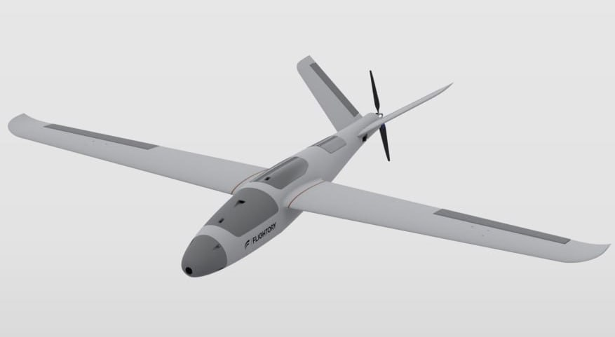

TechUAV Wiki
Модель самолета Stingray.
Безымянный 1737448560
Безымянный 1737449347
Список сформирован из темы
3d-модели бпла
Источник темы
ТЭЧ БпЛА | FPV
481 Модель самолета Stingray.
Из темы
3d-модели бпла
Из источника
ТЭЧ БпЛА | FPV
Модель самолета Stingray.
Модель самолета Stingray. Материал изготовления: PLA, PLA+, PETG, ABS.
[Internal]⬇️СКАЧАТЬ⬇️
Модель самолета Stork. Материал изготовления: PLA, PLA+, PETG, ABS.
[Internal]⬇️СКАЧАТЬ⬇️

Модель самолета Titan Falcon. Материал изготовления: PLA, PLA+, PETG, ABS.
[Internal]⬇️СКАЧАТЬ⬇️